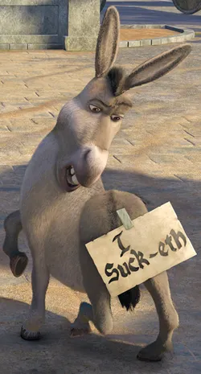

Bu Taha.
Aşağı kaydır ↓
Kendisi bir enaaaaaiiiiai ai ai

Sana karşı çok büyük bir hata yaptığının farkında.
Seninle bir daha konuşmak için Amerika'ya gitmeyi beklemek istemiyor
Kendisi bir enaaaaaiiiiai ai ai

Sana karşı çok büyük bir hata yaptığının farkında.
Seninle bir daha konuşmak için Amerika'ya gitmeyi beklemek istemiyor